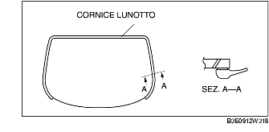
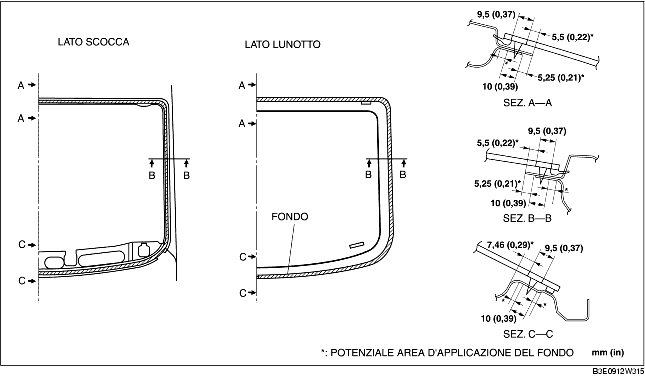
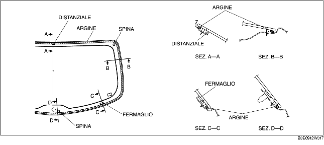
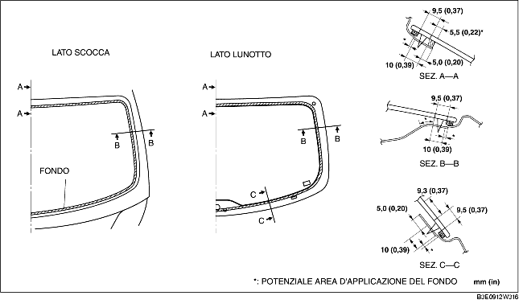

INSTALLAZIONE LUNOTTO
B3E091263931W02
4SD
-
Avvertenza
-
• Se il sigillante si incrina o il vetro si stacca per effetto dello spostamento d'aria che si crea quando si apre/chiude una porta con tutti i finestrini chiusi, potrebbe risultare difficile installare il lunotto. Lasciare tutti i finestrini aperti affinché il lunotto venga installato correttamente.
1. Usando un rasoio, rimuovere il vecchio sigillante dal perimetro del telaio lasciandone uno strato residuo dello spessore di 1-2 mm (0,04-0,07 in).
-
Attenzione
-
• Usando un rasoio a mani nude ci si può ferire. Indossare sempre i guanti quando si usa un rasoio.
2. Se in qualche punto il sigillante è stato asportato del tutto, sgrassare e applicare una mano di fondo, quindi lasciar asciugare per 30 minuti circa. Applicare quindi uno strato di sigillante di spessore pari a 2 mm (0,08 in).
3. Pulire e sgrassare il perimetro del vetro per un tratto di circa 50 mm (5,00 cm) dal bordo e la superficie d'attacco della carrozzeria.
4. Se si riutilizza un lunotto, installare la cornice del lunotto procedendo come segue.
-
(1) Pulire e sgrassare la superficie del lunotto su cui va installata la cornice.
-
(2) Applicare fondo per vetri sulla superficie del lunotto su cui va installata la cornice.

5. Applicare fondo per vetri sul vetro e fondo per carrozzerie sulla cornice del lunotto come mostrato in figura. Lasciar asciugare per 30 minuti circa.
-
Avvertenza
-
• Non toccare la superficie interessata e impedire che questa si sporchi o si unga. Altrimenti il fondo potrebbe non aderire a dovere alla superficie del vetro e della carrozzeria, consentendo infiltrazioni.

6. Applicare il sigillante sulla superficie del vetro come mostrato in figura.
7. Inserire le spine di riferimento nella carrozzeria, quindi installare il lunotto.
8. Premere le spine del lunotto per impegnare le linguette nella carrozzeria.
9. Fare pressione sull'intero perimetro del vetro in modo che lo spazio dal labbro della cornice sia nella norma.
10. Collegare il connettore del filamento.
11. Installare quanto segue:
-
(1) Arredamento cappelliera posteriore (vedere RIMOZIONE/INSTALLAZIONE ARREDAMENTO CAPPELLIERA POSTERIORE.)
-
(2) Arredamento montante C (vedere RIMOZIONE/INSTALLAZIONE ARREDAMENTO MONTANTE C).
-
(3) Arredamento passaruota (vedere RIMOZIONE/INSTALLAZIONE ARREDAMENTO PASSARUOTA.)
-
(4) Batticalcagno posteriore (Vedere RIMOZIONE/INSTALLAZIONE BATTICALCAGNO POSTERIORE).
-
(5) Sedile posteriore (vedere RIMOZIONE/INSTALLAZIONE SEDILE POSTERIORE.)
12. Lasciare che il sigillante s'indurisca del tutto.
-
Tempo d'indurimento del sigillante: 24 ore
13. Applicare sapone liquido sulla cornice del lunotto e soffiare aria dall'interno, e verificare che non si formino bolle e non ci siano perdite d'aria.
-
• Se si formano bolle o ci sono perdite d'aria, riparare la parte di sigillante difettosa e ricontrollare.
5HB
-
Avvertenza
-
• Se il sigillante si incrina o il vetro si stacca per effetto dello spostamento d'aria che si crea quando si apre/chiude una porta con tutti i finestrini chiusi, potrebbe risultare difficile installare il lunotto. Lasciare tutti i finestrini aperti affinché il lunotto venga installato correttamente.
1. Usando un rasoio, rimuovere il vecchio sigillante dal perimetro del telaio lasciandone uno strato residuo dello spessore di 1-2 mm (0,04-0,07 in).
-
Attenzione
-
• Usando un rasoio a mani nude ci si può ferire. Indossare sempre i guanti quando si usa un rasoio.
2. Se in qualche punto il sigillante è stato asportato del tutto, sgrassare e applicare una mano di fondo, quindi lasciar asciugare per 30 minuti circa. Applicare quindi uno strato di sigillante di spessore pari a 2 mm (0,08 in).
3. Pulire e sgrassare il perimetro del vetro per un tratto di circa 50 mm (1,97 in) dal bordo e la superficie d'attacco della carrozzeria.
4. Installare l'argine lungo il perimetro del vetro.

5. Attaccare i fermagli e il distanziale sulla superficie come mostrato in figura.
6. Attaccare le spine nei punti segnati durante la rimozione.
7. Applicare fondo per vetri sul vetro e fondo per carrozzerie sulla cornice del lunotto come mostrato in figura. Lasciar asciugare per 30 minuti circa.
-
Avvertenza
-
• Non toccare la superficie interessata e impedire che questa si sporchi o si unga. Altrimenti il fondo potrebbe non aderire a dovere alla superficie del vetro e della carrozzeria, consentendo infiltrazioni.

8. Applicare il sigillante sulla superficie del vetro come mostrato in figura.
9. Inserire le spine di riferimento nella carrozzeria, quindi installare il lunotto.
10. Premere le spine del lunotto per impegnare le linguette nella carrozzeria.
11. Fare pressione sull'intero perimetro del vetro.
12. Collegare il connettore del filamento.
13. Installare quanto segue:
-
(1) Spoiler posteriore (Vedere RIMOZIONE/INSTALLAZIONE SPOILER POSTERIORE).
-
(2) Motore tergilunotto (Vedere RIMOZIONE/INSTALLAZIONE MOTORE TERGILUNOTTO).
-
(3) Braccio e spazzola tergiparabrezza (Vedere RIMOZIONE/INSTALLAZIONE BRACCIO E SPAZZOLA TERGIPARABREZZA).
-
(4) Ripetitore luce freno (Vedere RIMOZIONE/INSTALLAZIONE RIPETITORE LUCE FRENO).
-
(5) Arredamento inferiore portellone (Vedere RIMOZIONE/INSTALLAZIONE ARREDAMENTO INFERIORE PORTELLONE).
-
(6) Arredamento laterale portellone (Vedere RIMOZIONE/INSTALLAZIONE ARREDAMENTO LATERALE PORTELLONE).
-
(7) Arredamento superiore portellone (Vedere RIMOZIONE/INSTALLAZIONE ARREDAMENTO SUPERIORE PORTELLONE).
14. Lasciare che il sigillante s'indurisca del tutto.
-
Tempo d'indurimento del sigillante: 24 ore
15. Applicare sapone liquido sulla cornice del lunotto e soffiare aria dall'interno, e verificare che non si formino bolle e non ci siano perdite d'aria.
-
• Se si formano bolle o ci sono perdite d'aria, riparare la parte di sigillante difettosa e ricontrollare.